TrioWay · revised palettes
Actual emulator captures at native resolution. Seven neutral palettes, three tonal palettes and three more creative colour combinations. All show 10:09.
Pebble Round 2 · 260 × 260 pixels
New colour sets
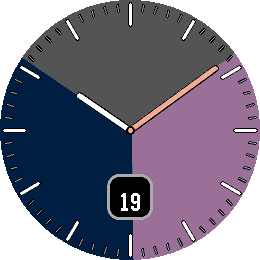
Dusk · Mauve & Gold
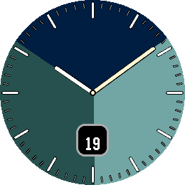
Lagoon · Seafoam
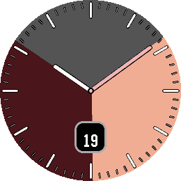
Ember · Sand
Neutral and tonal palettes
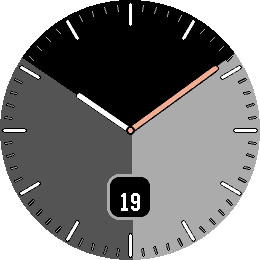
Classic · Gold
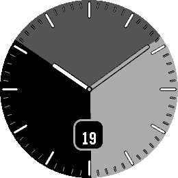
Graphite
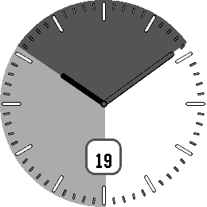
Silver
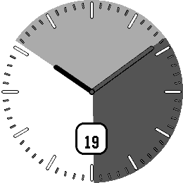
Paper
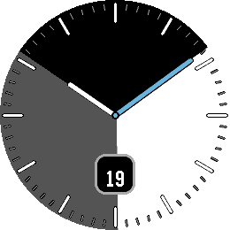
Ink · Blue
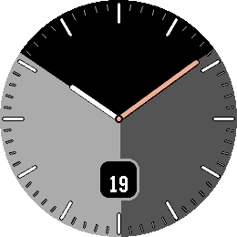
Stone · Gold
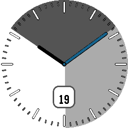
Porcelain · Blue
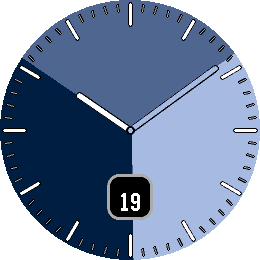
Tonal · Navy
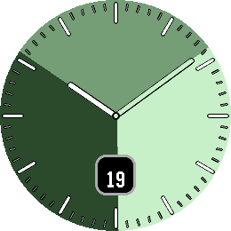
Tonal · Forest
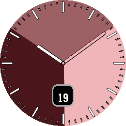
Tonal · Burgundy
Optional subtle texture
Off by default. A static, sparse grain shades the sector transitions within Pebble’s native colour palette.
Flat
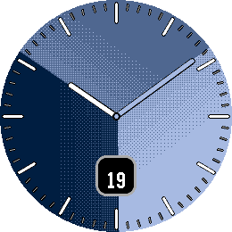
Texture enabled
Browser zoom may enlarge pixels. Swatches show the three sectors and two hand colours.